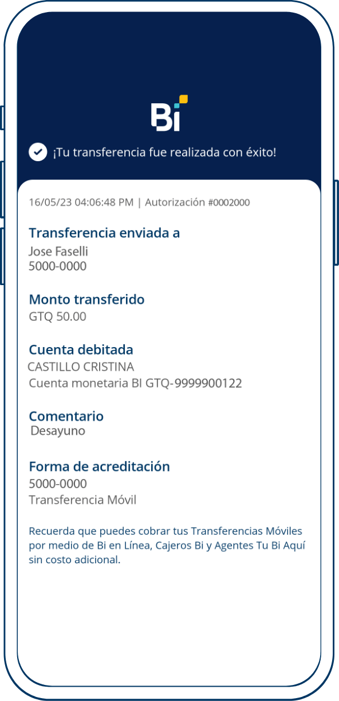
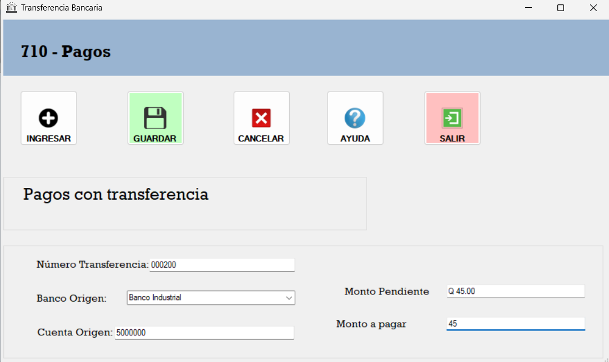
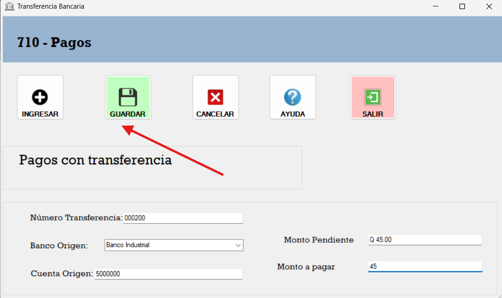

El Formulario de Pagos con transferencia es una herramienta que permite registrar los pagos realizados por los clientes. A continuación, se describen los pasos para utilizar el formulario:

Se registra el nombre del titular de la cuenta de origen. El número de la cuenta (este debe tener 10 a 14 dígitos), el banco emisor y el código de transferencia.

Si todos los campos están completos, se puede guardar el pago
